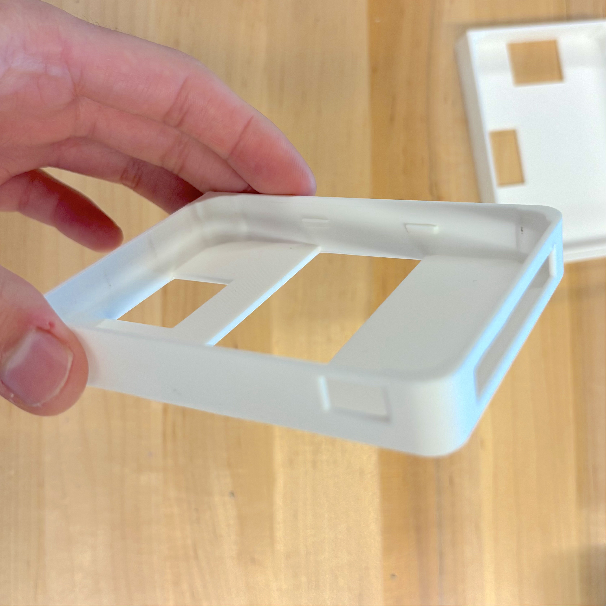
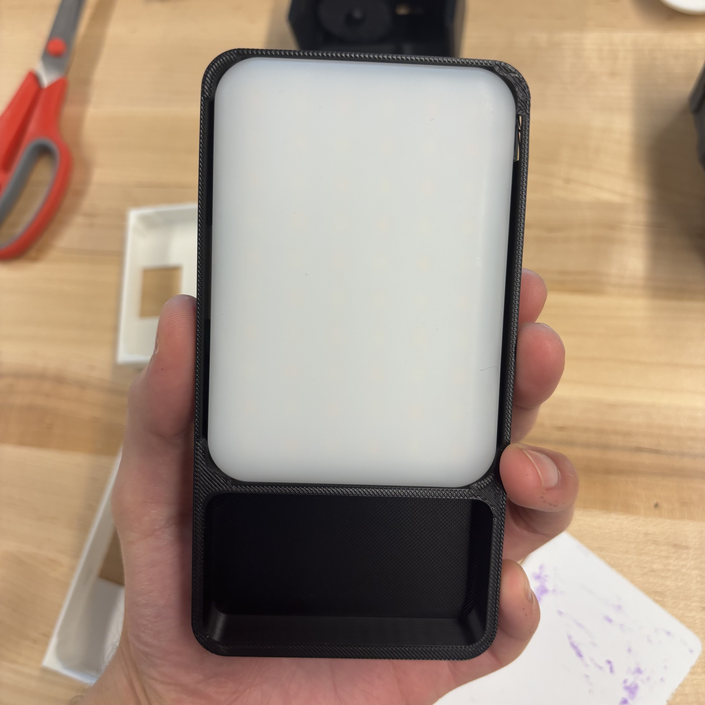
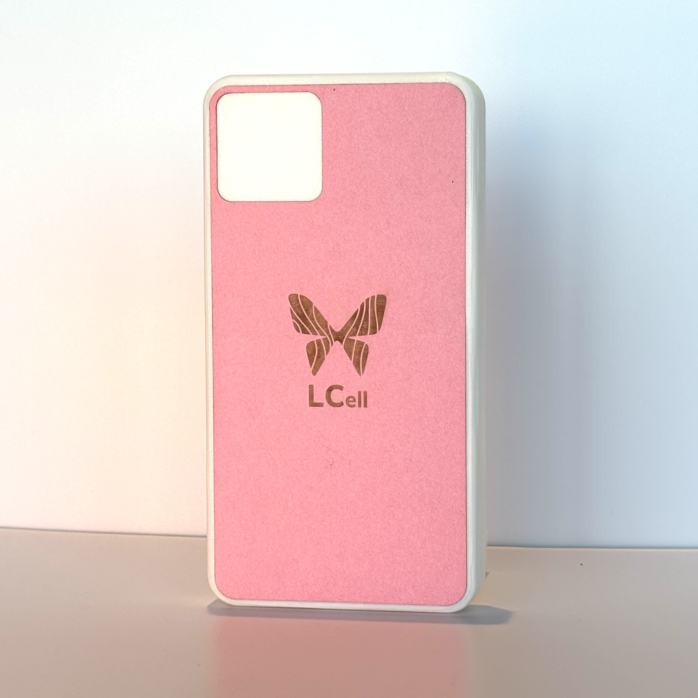
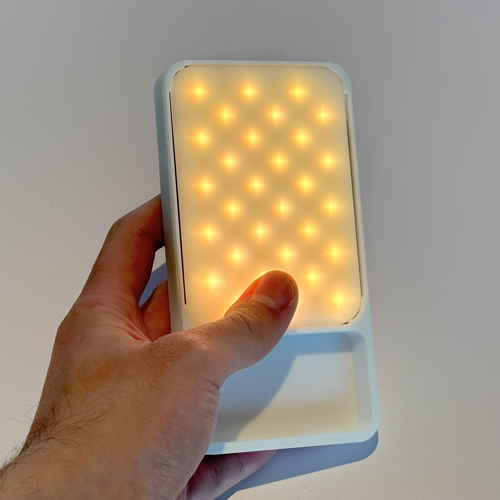

Produce a realistic mock phone that looks believable in a live performance while remaining quick to produce and durable enough for repeated use.
⚙ Onshape
⚙ Adobe Illustrator
⚙ Epilog Laser Cutter
⚙ BambuLab X1C 3D Printer
Designed over a 3-day period during my makerspace internship at the Lili'uokalani Center.
Concept
A Prop Phone
I was asked by the performing arts team to transform a rectangular LED light block into a realistic prop phone. I wanted to design a case that could be used directly off of the print bed—I opted to use a friction fit design, but it was difficult to get the tolerances correct.

Recipe
The L-CELL
The build was designed in Onshape, then 3D printed on a BambuLab X1C. To minimize the phone's thickness, the phone backing was laser cut from cardstock, which had the additional benefit of letting me try out a variety of designs I made in Adobe Illustrator.

Feedback
Well Received!
The performers were happy with the final product, and it was used to great effect in their stage play. As far as I know, I didn't hear of the light blocks coming loose during the performance!

